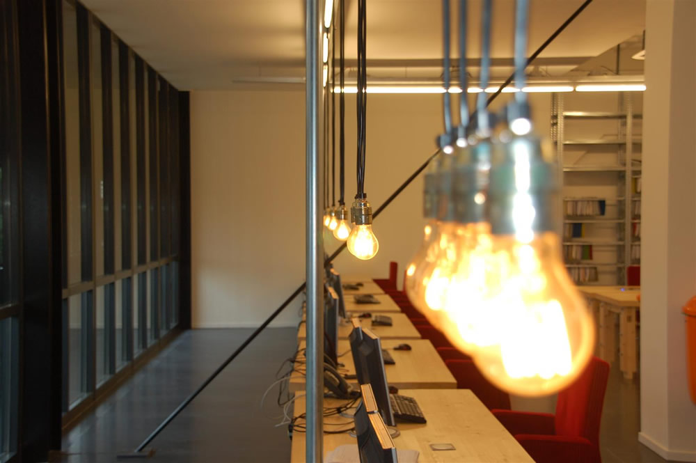
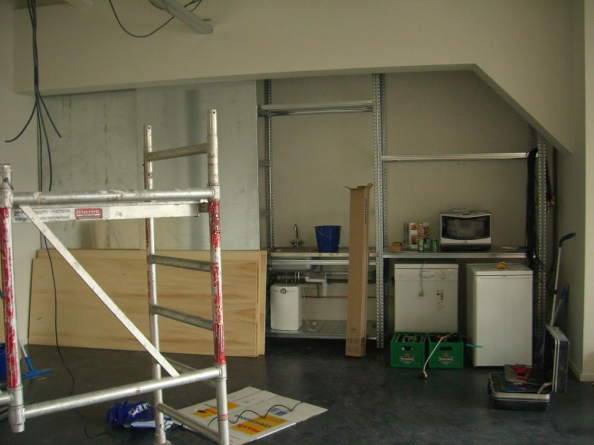
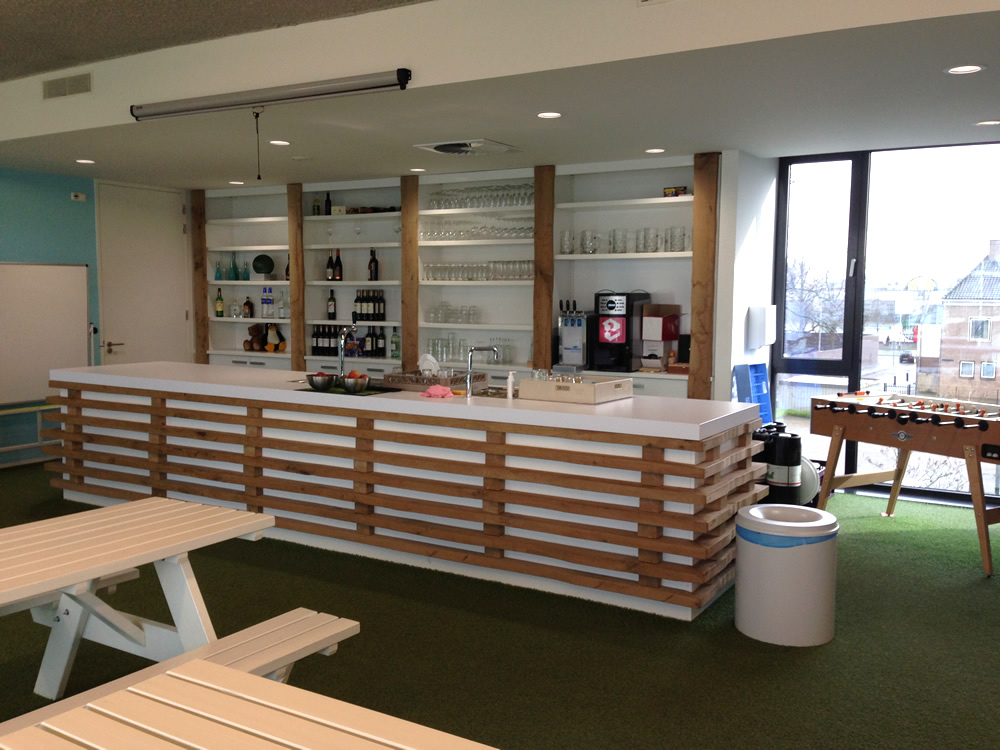
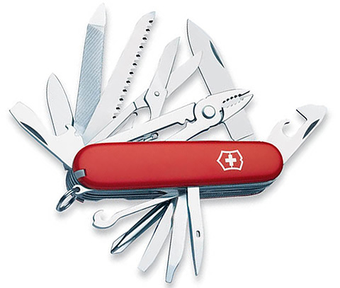
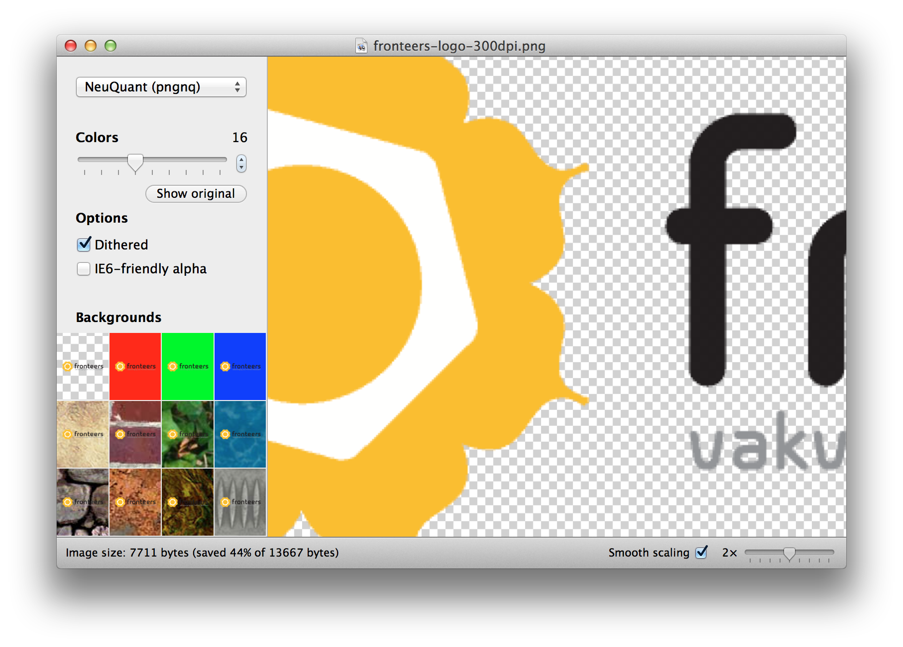
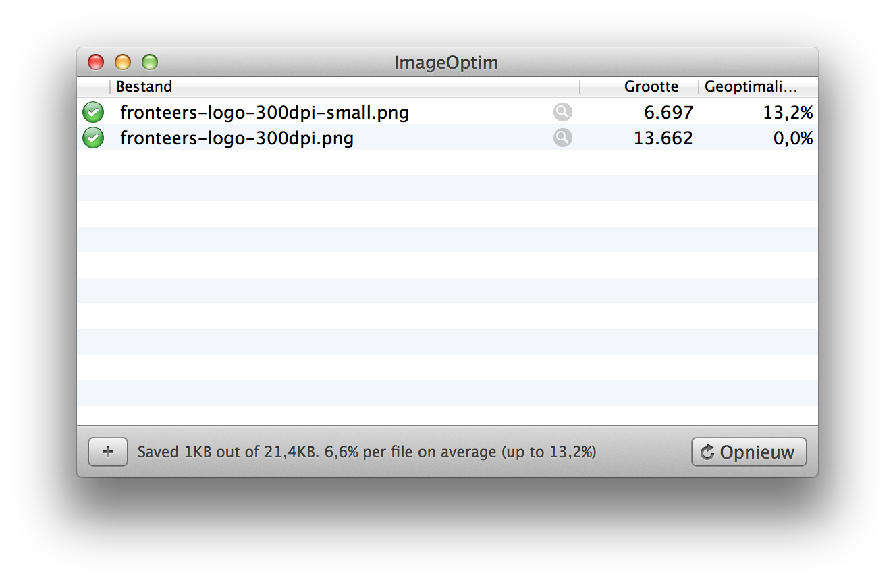
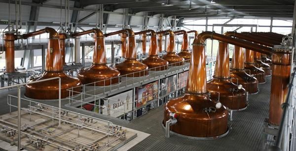

e-sites
een kijk in de front-end keuken
door: @_boye / @johnvanhulsen / @iain_vdw
2006
De keuken toen...
Kwaliteit kon beter
Lekker bordje tagsoup...iemand?

2008: eigen afdeling
- 3 ontwikkelaars
- Voorheen diverse disciplines (incl. design, flash en mobile)
- Nu sec front-end development
- Focus op standaardisatie
- Code afspraken
- Meetings / uitjes / conferenties
- Kennissessies
De keuken anno 2014
Topics
- Code afspraken
- Tooling
- Standaardisatie
Code afspraken
Waarom?
Eenheid in de broncode die we opleveren om zo de onderhoudbaarheid te verbeteren en de kwaliteit te bewaken.
Historie

Maar dan 258 jaar later
- Rond 2009 de eerste versie opgesteld door Joris en Boye
- Vroeger in een Word documentje
- Inmiddels online: frontend.e-sites.nl/afspraken.html
Levend document
- De inhoud wordt besproken tijdens front-end meetings
- Of tijdens langere meetings. 's avonds, met pizza en een biertje
- Van het team, voor het team, ook voor back-end developers
Onderdelen
- Algemene zaken (zoals browser ondersteuning)
- HTML, CSS en JavaScript
- Mobile
- Performance
- Toegankelijkheid
Toekomstplannen
- Nu: opsomming van regeltjes
- Toekomst: meer focus op de content
- Prettiger leesbaar
- Duidelijkere code voorbeelden
- Meertalig
Algemeen
Een aantal highlights uit de inhoud
Browser ondersteuning
De uitgewerkte pagina’s dienen exact conform het ontwerp te zijn in de laatste twee stabiele versies van de volgende desktopbrowsers:
- Internet Explorer
- Mozilla Firefox (Win/Mac)
- Google Chrome (Win/Mac)
- Safari (Mac)
én mobile
- Mobile Safari op iPhone/iPod touch en iPad (vanaf iOS6)
- Android Internet Browser (vanaf Android 4.1.2)
- Mobile IE9+
- Google Chrome voor iOS en Android
Maar ook
Zorgen dat de pagina’s er ook in de volgende browsers goed uit ziet
en werkt op:
- Andere mobiele apraten en oudere software versies
- IE8 & IE9 (uitzondering op de regel)
- Opera
IE?
Ja, Internet Explorer ;)
Maar ja: Ook IE (vanaf) versie 7 en 8 ondersteunen we. Niet zo mooi als vroeger, maar we zorgen dat het leesbaar is en dat cruciale dingen werken.
Met modern.ie is het eenvoudig testen.
Wat ondersteunen jullie?
CSS Standaarden
- LESS
- Componenten opzet
- Notatie / selectors
LESS
- Wat is LESS?
- Waarom LESS?
Componenten
- Losse .less file per component
Moedigt hergebruik aan - Media queries opnemen in component file
- Basis voor onze Distillery
Ons eigen framework, gebaseerd op componenten
Notatie en selectors
Zo kort mogelijke selectors
Max 3 niveaus diep
/* Bad */
ul#news-list > li li a span {}/* Much better */
.news-list .item-text {}Notatie en selectors
Géén ID's in selectors

Notatie en selectors
Eerst mixins, daarna reguliere properties
.foo {
.left();
.border-box();
border: 2px solid #bada55;
font-weight: bold;
text-decoration: underline;
}Your thoughts?
JavaScript
Werkwijze
- Non-blocking: voor de
</body> - Progressive enhancement
- Unobtrusive
- Functies en events gescheiden
- Strict mode
- Vermijd globale variabelen
- Logica verdelen in (kleine) losse functies (#perfmatters)
Notatie
Documentatie
JSdoc
/**
* Gets the current foo
*
* @author Naam Developer <voornaam@e-sites.nl>
* @param {string} foo
* @return {number} new ID for foo
*/Inline
// Hier een beschrijvend stukje commentaarjQuery
- 2.1.0 voor moderne browsers / IE9+ en 1.11.0 voor IE<9
- Zepto.js voor mobile, óf custom jQuery build
-
Event listeners altijd via
.on()(geen aliases)$('#selector').on('click', handler); // event listener $('#group').on('click', '.btn', handler); // event delegation - Qua
$('.selectors')gelden de CSS guidelines - Bij twijfel welke methods 't snelst zijn: jsperf.com
- jQuery sets cachen en prefixen:
$self = $(this);
Toekomstplannen
- Functions.js / events.js over boord
- Overstap naar AMD architectuur
- Met behulp van Require.js
- R.js optimizer verankeren in deployment
- Unit testing
Your thoughts?
Tooling
devtools.esites
- Intern portaal
- Error logging
- Cronitor
- Deployment
CLI tools
- Dotfiles
- SVN aliases (status, commit, update)
- JSHint commit-hook
- Glue *
- Grunt
Minify library
- PHP5 library
- Groepen configureren in minifyConfig.php
- Voegt bestanden samen + minification
- Uitfasering in volle gang
- Verankeren in publicatie proces
- Server config obv Yahoo!'s Rules for High Performance Web Sites
Sitemanager 5 admin
- Beheer van klanten en hun sites
- Aanmaken en configureren sites
- Modules en diens opties selecteren
- Hosting pakket instellen
- Google Analytics statistieken
Default site
- Scaffolding van al onze (nieuwe) sites
- Standaard back-end en front-end componenten
- Evolueert continu
- Standaard mappenstructuur
Adobe Fireworks
We <3 Fireworks
GLUE
"Sprites maken is een ambacht, dat moeten we in stand houden"
- John van Hulsen, 2011
44%, 14kB vs. 8kB
ImageAlpha
ImageOptim
Het kan nog kleiner
IDE's
Sublime? Aptana Studio? Atom? Web/PHP Storm?
Notepad? Coda? Espresso? Dreamweaver? Iets anders?
Welke editor gebruik jij?
Mobile testbak
Icm Adobe Edge Inspect
Standaardisatie
Proces
- Brainstorms / meetings
- Generiek ontwikkelen tijdens projecten *
- Code reviews
- Pushen naar Distillery of GitHub
GitHub

GitHub richtlijnen
- Generiek van opzet
- Nette en consistente coding stijl
- Index.html met demo's
- Online beschikbaar op: github.e-sites.nl/scriptnaam
- Conform de JSHint richtlijnen
- Minified productie versie aanwezig
- Engelse README.md file met beknopte documentatie van het script
- Unit tests zijn aanwezig
JSend
Standaardisatie van JSON responses
- Gebaseerd op de JSend spec van OmniTI Labs
- Spec definieert 2 verplichte properties in response
- 3 status codes: success, fail en error
- PHP class beschikbaar
JSend
Hoe ziet zo'n response eruit?
{
"status": "success",
"data": {
"foo": "bar",
"baz": 1337,
"list": [true, false, "abc"]
}
}JSend
Toekomstplannen v2.0
- Complete re-write
- Meer consistentie: 1 aanroep, geen onnodige aliases
- Modulaire opzet
- Asynchronous/Promises
- Geen jQuery dependency > lightweight
Perimeter.js
- Creërt onzichtbaar kader rondom een DOM element
mbvElement.getBoundingClientRect() - Registreert 'breaches' zodra men met de cursor in dit kader komt
- Lightweight; (~0.6kb minified / gzipped)
- Geen dependencies
- Ingebouwde debugger (boundary.js)
- Uitgebreid gedocumenteerd
Zepto Builder
- Custom Zepto.js builds
- Voor degene die liever niet via CLI werken
- Pakt autom. de meest recente modules uit de Zepto repo
- Minification via de browser build van Uglify
- Lokaal opslaan via de FileSystem API
Zepto Builder
Onder de motorkap
- Volledig client-side (geen node.js)
- Topcoat gebruikt voor de interface
- Require.js architectuur (incl. optimizer)
- GitHub API calls via JSONP
- Caching via
window.sessionStorage - IE9+ support
- Grunt tasks & Bower package management
- Totstandkoming
e-sites Distillery
DRY... Dus we bouwen een 'plank' met herbruikbaar materiaal
- Codebase van HTML, CSS en JavaScript snippets
- Zelfgebouwde kleine componenten
- Zeer gering gestyled
Component viewer
Ooit op Github: Sambuca
Als we vinden dat het het klaar is.
Endex
Vragen?
PS we zoeken nog een toegewijde front-end developer!